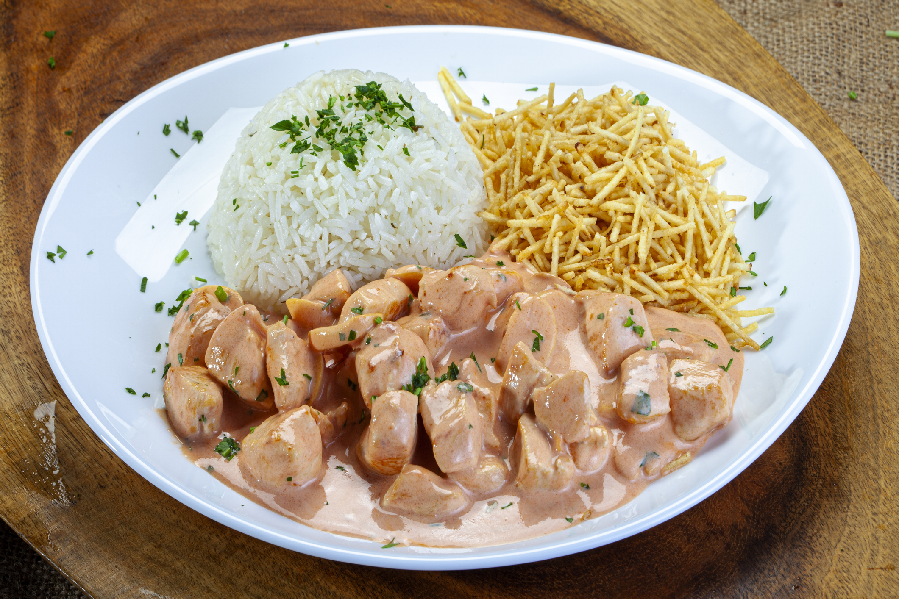

Strogonoff de Frango
Aprenda a fazer o strogonoff mais cremoso e irresistível!

Tempo de Preparo
30 minutos
Rendimento
4 porções
Ingredientes
500g de peito de frango cortado em cubos
1 lata de creme de leite
2 colheres de sopa de molho de tomate
2 colheres de sopa de ketchup
1 colher de sopa de mostarda
1 cebola picada
1 dente de alho picado
Azeite, sal e pimenta-do-reino a gosto
Modo de Preparo
Numa panela, aqueça o azeite e doure a cebola e o alho.
Adicione o frango em cubos e tempere com sal e pimenta. Cozinhe até dourar.
Acrescente o molho de tomate, o ketchup e a mostarda, misturando bem.
Abaixe o fogo, adicione o creme de leite e mexa até incorporar sem deixar ferver.
Desligue o fogo e sirva acompanhado de arroz branco e batata palha.